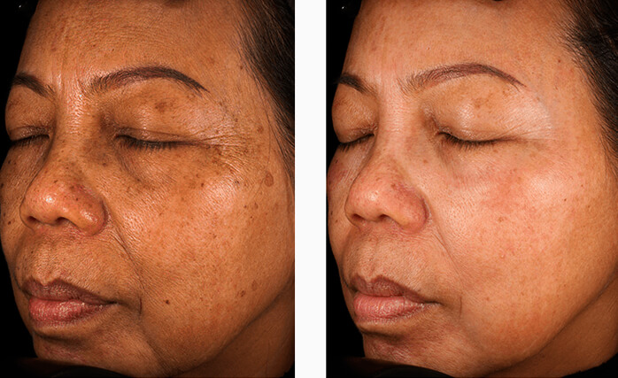

¡Es posible aparentar 35 a los 51 sin cirugía ni inyecciones!¿Sabían que gracias a la fuerza de las uvas pueden lucir 17 años más joven en 61 días? ¡Hola, queridas lectoras! Continuamos nuestra columna semanal "La edad no es un obstáculo para la belleza", donde ustedes comparten con nosotras sus métodos secretos de rejuvenecimiento de la piel. Hoy revelaremos el secreto de Lucía, el cual causó un gran revuelo en la red y ahora es uno de los más discutidos en los foros de belleza. La historia tiene un comienzo triste: después de 25 años de matrimonio, el esposo de Lucía la dejó con palabras de que era vieja. "Tuve depresión durante ocho meses, lloraba constantemente y dejé de cuidarme por completo. Los círculos y bolsas debajo de los ojos se hicieron más grandes, la cara se llenó de arrugas y los pliegues nasolabiales se hicieron más profundos. Tenía 49 años y delante del espejo lo único que veía era soledad y vejez", recuerda Lucía. Cada vez admiramos la increíble tenacidad de nuestras heroínas. ¿Creen que Lucía se dio por vencida? ¡Claro que no! Estaba segura de que iba a recuperar su belleza a toda costa. "Crecí en un tiempo en el que no había tratamientos con Botox, cirugías plásticas ni otros tratamientos. En esa época, las mujeres maduras se veían muy bien sin todas esas innovaciones. Estaba segura de que había una forma de recuperar la juventud sin esos costosos y peligrosos tratamientos", comenta Lucía. En 5 meses lo probó todo: peelings, mascarillas, lociones, sueros, ejercicios y masajes, pero todos ellos o bien daban un efecto apenas perceptible, o bien eran completamente ineficaces. Lucía recurrió a un dermatólogo, pero no pudo pagar el tratamiento propuesto. "Estaba desesperada porque no me ayudaba nada. Mientras probaba un nuevo método, estaba a punto de rendirme, pero no lo hice. ¡Y no en vano! Una día, mientras charlaba con una vendedora, ella me dijo que tenía 45 años a pesar de que por su apariencia diría que tenía 30 como máximo. Ella compartió conmigo un método que había estado usando durante 17 años a diario. Se trataba de una mascarilla a base de uvas, huevos batidos con café molido, miel y yogur. Cada día, durante 4 horas, calentaba mi rostro con esta mezcla caliente dándome un masaje facial. Después de 14 días, los resultados me sorprendieron: las arrugas se alisaron. ¡2 meses después lucía 10 años más joven! Después de otro mes, las arrugas alrededor de los ojos y los pliegues nasolabiales se volvieron casi invisibles. Tras muchos años volví a sentir mi belleza y comencé a recibir cumplidos de la gente. ¡Estaba muy feliz! Pero la mascarilla también tenía sus desventajas: había que mantenerla durante mucho tiempo en el rostro y era muy difícil de quitar. Cada día, Lucía se gastaba 30 minutos para la preparación de la mezcla, 5 horas para mantenerla en la cara y otra hora para quitársela, pero la belleza, como dicen, requiere sacrificio. Mi hija también probó la mascarilla, pero le faltó paciencia para hacerla todos los días durante tanto tiempo. Un día viajó al extranjero para hacerse unos tratamientos antiedad y le contó a su dermatólogo acerca de esta mascarilla. Él le confirmó que los elementos contenidos en la mascarilla realmente tienen un efecto rejuvenecedor, incluso para la piel envejecida. Le dijo que hay una crema llamada que contiene la misma sustancia que mi mascarilla, pero que la crema es más conveniente ya que solo debe aplicarse mañana y tarde. Desconfié cuando trajo unos cuantos botes de desde Israel. Creí que el dermatólogo simplemente le hizo gastar dinero, pero después de un tiempo vi que al usarla ya no había arrugas en su piel, a pesar de que tenía 31 años. Así que me atreví a probarla. Esta crema era incluso más eficaz que la mascarilla: 23 días después, todas las arrugas desaparecieron y mi piel se tensó notablemente. ¡Fue una victoria! Ahora, en lugar de sentarme con la mascarilla en casa, asisto a eventos y a lugares interesantes. ¡Tengo más admiradores que en mi juventud! Lamentablemente, este no fue su final feliz y los problemas aparecieron de nuevo. En su blog, que había conseguido más de 500.000 suscriptores, solía escribir sobre el rejuvenecimiento de la piel. Cuando ella escribió un post sobre , recibió muchas amenazas exigiendo eliminar la información sobre este producto. A los propietarios de las clínicas de cirugía plástica no les hacía mucha gracia el hecho de que las mujeres conocieran una forma más sencilla y económica de rejuvenecer su piel. Lucía se vio obligada a eliminar el blog por seguridad. 
''Está claro que el dinero gobierna el mundo porque hay mucha gente codiciosa que quiere aprovecharse. Soy una mujer débil y no puedo luchar contra el sistema. Es una lástima que tuviese que eliminar mi blog, pero al mismo tiempo sé que no tendría tiempo para llevarlo: en primer lugar, gracias a mi blog, los representantes oficiales de me ofrecieron un trabajo. En segundo lugar me casé, así que todo mi tiempo libre lo paso con el mejor hombre del mundo. Estoy muy agradecida a todas aquellas mujeres que leían mi blog, me apoyaban y compartían sus recetas. Gracias a todas ustedes no fui por el mal camino y por fin estoy feliz", comenta nuestra heroína. Actualmente, Lucía sigue trabajando con el equipo de que ha ayudado a 985.967 mujeres de todo el mundo a recuperar la juventud de la piel, y cada día este número sigue creciendo. Probablemente, la misión de cada persona es mejorarse a sí misma y ayudar a otras a hacerlo. Después de una larga y difícil búsqueda, por fin dimos con el mejor producto para el rejuvenecimiento de la piel. Es . Entonces, ¿vale la pena gastar grandes sumas en esas dolorosas inyecciones de Botox, en esas peligrosas cirugías u otros costosos productos? Existe una forma asequible y fácil de lograr el mismo efecto. Depende de ustedes, queridas lectoras. Las que quieran probar , pueden pedirla haciendo clic en el botón de abajo. Nos despedimos hasta la próxima semana. Les deseamos todo lo mejor y recuerden que la verdadera belleza está dentro de ustedes. TODOS LOS COMENTARIOS ¡Por fin he encontrado ! Me la regalaron por mi cumpleaños. ¡Empecé a usarla y me enamoré de ella tras la primera aplicación! Las arrugas se alisaron en una semana, la piel se volvió suave e hidratada. Busqué en las tiendas pero no la encontré. Ahora he pedido 3 botes. La crema es muy buena.
¿Sabían que solamente pueden pedir en el sitio web oficial? Un día compré esta crema en una tienda de mi ciudad y me topé con una falsificación.
Lucía, ¡soy su fan No. 1! Le admiro mucho. Leía su blog desde que lo creó. Lamento mucho que haya tenido que eliminarlo.
Estoy de acuerdo al 100%, los salones de belleza nos roban dinero por unos productos carísimos. Existen otros productos similares pero mucho más baratos.
Mis amigas y yo hemos estado usando desde hace mucho tiempo. Me sorprende que muy poca gente haya oído hablar de un producto tan bueno.
Estaba alucinada cuando tras una semana los círculos oscuros y las bolsas debajo de los ojos habían desaparecido. Aquí tienen una foto. 
Chicas, ¡es un producto mágico! Cuando la crema aún no estaba disponible para la venta, yo era una de esas 100 voluntarias que estaban dispuestas a probarla. ¡Los resultados son sorprendentes! 15 años menos en tan solo 21 días...
Probé la mascarilla con uvas pero no tuve paciencia para hacerla cada día y mantenerla durante 4 horas. Pediré para ver qué tal.
¡Hola, chicas! Trabajé de esteticista durante 27 años y he de admitir que muchas clínicas de estética se callan sobre los métodos de rejuvenecimiento disponibles por el dinero. contiene todos los elementos necesarios para la piel madura: extracto de uva, ácido hialurónico y muchos otros. La combinación de estos elementos ayudará a prolongar su juventud por muchos años. ¡La recomiendo!
|


Carmen
¡Su historia me ha inspirado mucho! ¡Lucía, se ve increíble! He pedido esta crema. Tengo muchas ganas de probarla.